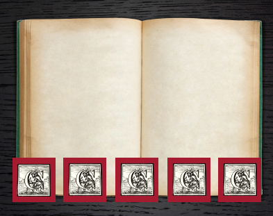

Christophe Plantin
Welcome to Christophe Plantin's world. Discover how his motto, "Labore et Constantia"—"By Labor and Constancy"—shaped literary history.

Who
is
Christphe Plantin?
Born in 1520 in Saint-Avertin, France, Christophe Plantin began his career as a skilled bookbinder in Paris. Seeking better opportunities, he moved to Antwerp, a bustling hub of commerce and culture, where his craftsmanship quickly gained recognition. But his promising path was abruptly altered one fateful night, setting him on a journey that would leave an indelible mark on history.
One night in
1555
Christophe Plantin carried a gilded leather basket, a stunning piece commissioned by a powerful client.
The intricate work made it look like a treasure chest, drawing the attention of villains lurking in the shadows.
After weeks of struggle, he chose not to give up. Unfortunately, he broke his arm and had to quit his job, but this setback soon became a blessing in disguise.
The
new beginning
Encouraged by members of a progressive religious group, Plantin learned the art of printing. What began as a means of survival soon became his passion. With a keen eye for quality and an understanding of the market, he quickly gained a reputation for excellence.

Learn
The art of printing
Did you ever wonder what is the process of printing? Now you can try by yourself
His
first printed works
stood out
for their
precision
and artistry
Building
the empire
Plantin’s rise wasn’t just about printing , it was about innovation, ambition, and a relentless drive to grow.
He expanded his business, producing not only religious texts but also scientific works, , and world-renowned literature. His magnum opus, the Polyglot Bible, was a monumental achievement, bringing together scholars from across Europe to publish the Bible in multiple languages.

Guess
the language
Below is an excerpt from the Polyglot Bible published by Plantin. Can you identify the language of these sentences?
Sic enim dilexit Deus mundum ut Filium suum unigenitum daret, ut omnis qui credit in eum non pereat, sed habeat vitam aeternam.
Printing
Flourished
Through
Plantin's vision
Ready
to visit us?
From humble beginnings to shaping Europe's intellectual landscape, Christophe Plantin’s legacy lives on. Discover his journey at the Plantin-Moretus Museum—book your visit today.